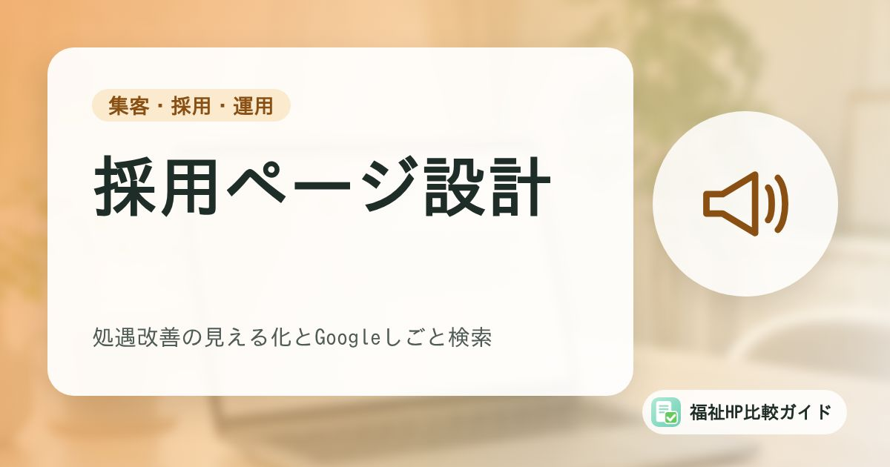

福祉事業所の採用ページ設計｜処遇改善の見える化とGoogleしごと検索（求人の構造化データ）への対応

求人サイトに募集を出しても応募が集まらない――多くの福祉事業所が抱える悩みです。求職者の多くは、応募する前に事業所のホームページを確認しています。ホームページの採用情報を充実させることは、応募数を増やし、入職後のミスマッチを減らすことにもつながります。
この記事でわかること
- 求職者は応募前にホームページで「職場の様子」を確認している
- 採用ページに載せるべき項目と構成例
- 職員インタビュー・1日の流れの作り方
- 求人媒体・Googleしごと検索との連携
求職者は応募前にホームページを見ている
求人サイトやハローワークで福祉事業所の募集を見つけた求職者は、応募する前に事業所名で検索し、ホームページを確認することが多くあります。そこで知りたいのは、求人票だけではわからない「どんな職場なのか」です。
| 求職者の疑問 | ホームページで伝えたいこと |
|---|---|
| どんな利用者さんがいるの？ | サービスの種類、対象者、支援の方針 |
| どんな仕事をするの？ | 1日の流れ、仕事内容、担当業務 |
| 未経験でも大丈夫？ | 研修制度、先輩のサポート、資格取得支援 |
| どんな人が働いているの？ | 職員の年代・経歴、インタビュー |
| 働きやすい職場？ | 休日、残業、有給休暇の取得状況、子育て支援 |
| 給料はどのくらい？ | 給与例、手当、処遇改善加算の配分方法 |
ホームページに採用情報がない、または古いままになっていると、「本当に募集しているのかな」「情報を出さない職場なのかな」と不安を感じさせてしまいます。
採用ページに載せるべき項目
基本の募集要項
- 募集職種（生活支援員、世話人、児童指導員、サービス管理責任者など）
- 雇用形態（正職員、パート、夜勤専従など）
- 給与（月給・時給の範囲、手当の内訳）
- 勤務時間・シフト、休日・休暇
- 必要な資格・経験（「資格不問」「未経験歓迎」なども明記）
- 勤務地（事業所の住所、最寄り駅、車通勤の可否）
- 福利厚生（社会保険、退職金制度、研修、資格取得支援など）
- 応募方法と選考の流れ
職場の魅力を伝える情報
- 代表・管理者からのメッセージ（どんな人と働きたいか）
- 職員インタビュー（入職のきっかけ、やりがい、大変なこと）
- 1日の仕事の流れ
- 研修・キャリアアップの仕組み
- 数字で見る職場（職員数、平均年齢、男女比、有給休暇取得率、育休取得実績など）
- 職場の写真（事務所、休憩スペース、職員同士の様子）
処遇改善の取組を見える化する
処遇改善加算を取得している場合は、賃金改善の内容や、職場環境の改善の取組（研修、ICTの活用、休暇取得の推進など）を採用ページで紹介しましょう。2026年度の臨時報酬改定でも処遇改善加算の見直しが行われており、求職者にとって給与や働きやすさに関わる重要な情報です。加算の要件によっては、職場環境等の取組を公表することが求められる場合もあります。
職員インタビューの作り方
職員インタビューは、求職者が「自分がここで働く姿」をイメージするために、最も効果的なコンテンツのひとつです。
質問例
- 入職する前はどんな仕事をしていましたか？
- この事業所を選んだ理由は何ですか？
- 1日の仕事の流れを教えてください
- 仕事でうれしかったエピソードを教えてください
- 大変だったこと、それをどう乗り越えましたか？
- 職場の雰囲気や、職員同士の関係はどうですか？
- 応募を考えている方へメッセージをお願いします
インタビューのコツ
- 異なる立場の職員を紹介する：新人と中堅、正職員とパート、未経験入職と経験者など
- よいことだけを書かない：大変なことも正直に書くと、かえって信頼される
- 利用者の個人情報に配慮する：エピソードに登場する利用者が特定されないようにする
- 写真を添える：本人の同意を得て、仕事中の自然な表情を撮影する
求人媒体・Googleしごと検索との連携
求人媒体からホームページへ誘導する
求人サイトやハローワークの求人票には、ホームページのアドレスを必ず記載しましょう。求人票で興味を持った人が、ホームページで詳しい情報を確認できるようにします。
Googleの求人検索に表示させる
Googleで「◯◯市 生活支援員 求人」などと検索すると、検索結果に求人情報がまとめて表示されることがあります。自社ホームページの求人ページに、Googleが定める形式（構造化データ）で求人情報を記述すると、ここに表示される可能性があります。制作会社に依頼する場合は、対応できるか確認してみましょう。
募集を終えたら情報を更新
募集を終了した求人をそのまま掲載し続けると、応募者とのトラブルの原因になります。構造化データを使っている場合も、募集終了後は速やかに削除または更新しましょう。
採用ページの構成例
- キャッチコピーとメッセージ：どんな職場か、どんな人と働きたいか
- 数字で見る職場：職員数、平均年齢、有給取得率など
- 仕事内容と1日の流れ
- 職員インタビュー（2〜3名）
- 研修・キャリアアップ・処遇改善の取組
- 募集要項（職種ごと）
- よくある質問
- 応募フォーム・見学の申込み
「職場見学」の受け付けも
いきなり応募するのはハードルが高いと感じる求職者もいます。「まずは職場見学から」「話を聞くだけでもOK」といった入口を用意すると、問い合わせが増えやすくなります。
まとめ
福祉事業所の採用では、求人票だけでは伝わらない「職場の様子」を、ホームページでいかに伝えるかが重要です。募集要項に加えて、職員インタビュー、1日の流れ、研修や処遇改善の取組を掲載し、求職者の不安を解消しましょう。
求人媒体やGoogleの求人検索とも連携させれば、ホームページは事業所の採用活動の拠点になります。地域での検索からの応募を増やすには「福祉事業所のホームページを地域検索で見つけてもらうSEOの基本」もあわせてご覧ください。
よくある質問
採用専用のサイトを作るべきですか？
まずは今のホームページの中に、充実した採用ページを作ることから始めるのがおすすめです。複数の事業所で多くの職種を継続的に募集している法人では、採用専用サイトを作ることで情報を整理しやすくなります。
給与はホームページに載せたほうがよいですか？
載せることをおすすめします。給与や待遇は求職者が最も知りたい情報のひとつで、記載がないと応募をためらう原因になります。「月給◯万円〜◯万円（処遇改善加算による手当を含む）」のように、内訳や条件がわかる形で示しましょう。
職員の写真や名前を載せるときの注意点はありますか？
本人の同意を得ることが前提です。退職した場合に写真やインタビューをどう扱うか（削除する、一定期間は掲載を続けるなど）も事前に決めて伝えておきましょう。フルネームではなく、名字やイニシャルで掲載する方法もあります。
参考資料・出典
- 厚生労働省「障害福祉サービス等報酬改定検討チーム」（処遇改善加算の見直しを含む）
- WAM NET「令和8年度障害福祉サービス等報酬改定に関する情報」
- Google 検索セントラル「求人情報（JobPosting）の構造化データ」
制度・料金・統計は改定される場合があります。最新の内容は各出典の公式情報でご確認ください。